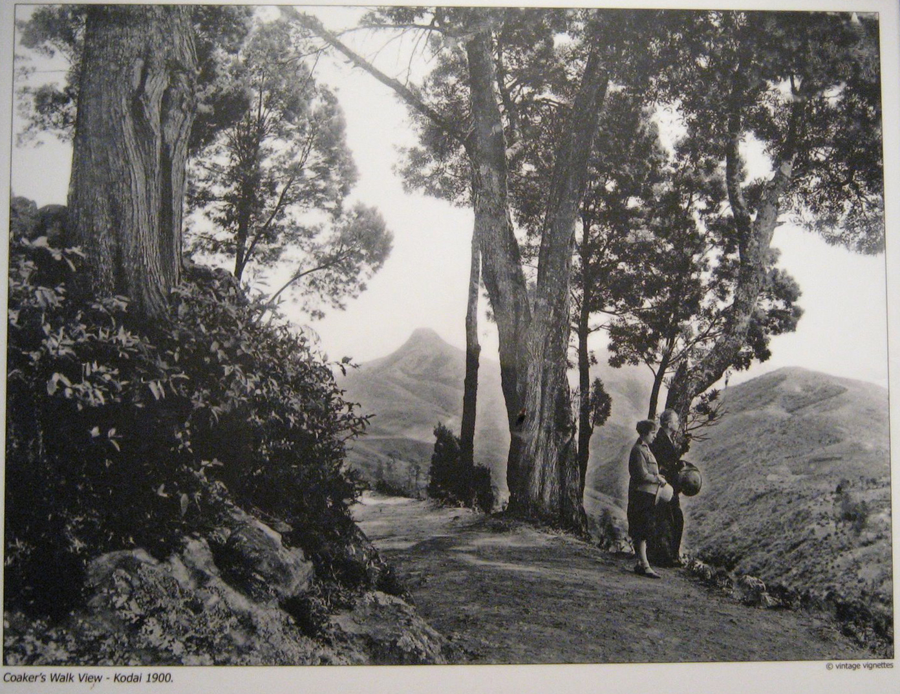

Login to Trip advisor
Forgotten account? sign up
Places to Visit in Kodaikanal
Kodaikanal
The earliest references to Kodaikanal and the Palani hills are found in Tamil Sangam literature.[3] Tamil composition Kuṟuntokai, the second book of the anthology Ettuthokai, mentions the mountainous geographic region (thinai) of Kurinji. The region is associated with Hindu god Murugan and is described as a forest with lakes, waterfalls and trees like teak, bamboo and sandalwood.[4] The name of the region, Kurinji, derives from the name of the famous flower Kurinji found only in the hills and the occupants of the region were tribal people whose prime occupations were hunting, honey harvesting and millet cultivation.[5][6] The hills were populated by the Palaiyar tribal people.[
In 1821, a British Lieutenant, B. S. Ward, climbed up from his headquarters in the Kunnavan village to Kodaikanal to survey the area and reported of beautiful hills with a healthy climate with about 4,000 people living in well-structured villages.[8] In 1834, J.C Wroughten, then revenue collector of Madura and C. R. Cotton, a member of the Madras Presidency's board of revenue, climbed up the hills from Devadanapatti.[9] In 1836, botanist Robert Wight visited Kodaikanal and recorded his observations in the 1837 Madras Journal of Literature and Science.[10] In 1852, Major J. M. Partridge of the Bombay Army built a house and was the person to settle there.[9] In 1853, only six to seven houses were there when then Governor of Madras Presidency Charles Trevelyan visited in 1860.[11] In 1862, American missionary David Coit Scudder arrived.[9] In 1863, acting on a suggestion of Vere Levinge, then collector of Madurai, an artificial lake was formed.[11]
In 1867, Major J. M. Partridge imported Australian eucalyptus and wattle trees and in 1872, Lt. Coaker cut a path along the steep south east facing ridge which overlooks the plains below and prepared a descriptive map the region.[12][13] In the later half of the 19th century, it became a regular summer retreat for American missionaries and other European diplomats as a refuge from the high temperatures and tropical diseases of the plains.[14][15] In 1901, the first observations commenced at the Kodaikanal Observatory.[16] In 1909, the area had developed into a small town with 151 houses and a functioning post office, churches, clubs, schools and shops.[14] In 1914, the ghat road was completed.[11] It continued to serve as a summer retreat during the British Raj and became a popular hill station later.[1]
North of the town, high hills slope down into the villages and on the east, the hill slopes less abruptly into the lower Palani. A precipitous escarpment facing the Cumbum valley is on the south with a plateau leading to Manjampatti Valley in the Anamalai Hills in the west. There are many streams and waterfalls.
Best Places To Visit In Kodaikanal

Coakers Walk
Must visit to see the valley view on a clear sunny day It’s a small twenty thirty minute walk around the valley, with small
shopping stuff and stalls at equal distances.
Formerly known as Suicide point, the Green Valley View offers a breathtaking view of the plains, deep valleys and hills.
The mesmerizing view of the Vaigai Dam is an unforgettable experience. It used to be known as suicide point because
of the dangerous valley which is dense and deep; below the point of more than 5000 feet drop.

Kodaikanal Lake
Kodaikanal Lake (Tamil: கொடைக்கானல் ஏரி), also known as Kodai Lake, is a manmade lake located in the Kodaikanal city in Dindigul district in Tamil Nadu, India. Sir Vere Henry Levinge,[1] the then Collector of Madurai, was instrumental in creating the lake in 1863, amidst the Kodaikanal town which was developed by the British and early missionaries from USA.[2][3] The lake is said to be Kodaikanal's most popular geographic landmark and tourist attraction Boating in Kodaikanal Lake. Over the years a boat club, boathouse and boat service (with rowing boats and pedalling boats and a public ferry) for the public and tourists has become fully functional and is of aesthetic significance for tourism. Boat Pageant and Flower Shows are a regular feature in the summer season which attracts tourists.[4] Bryant Park is situated adjacent to the lake.[5]

Berijam Lake
There was originally a swamp here known as the Berijam swamp.[7] The previous existence here of a large lake, evidence of which was visible nearby, was first recorded in 1864 by Colonel Douglas Hamilton of the 21st Regiment of the Madras Native Infantry. No written record or even local legend regarding the existence of this ancient lake survives. However, judging from visible traces of its shoreline which still remained in 1906, it must have been nearly 5 mi (8.0 km) long, up to 3,960 ft (1,210 m) wide and up to 70 ft (21 m) deep. It was apparently formed by the side of a hill slipping down into a valley which slopes northwards, and damming up the stream which ran to the Amaravati River at the bottom of it. This stream apparently eventually cut its way through the huge natural embankment so formed, and thus emptied the lake this landslide/dam had once created. The dam was about 600 ft (180 m) long and the breach in it was about 300 ft (91 m) across and 90 ft (27 m) deep.[8]